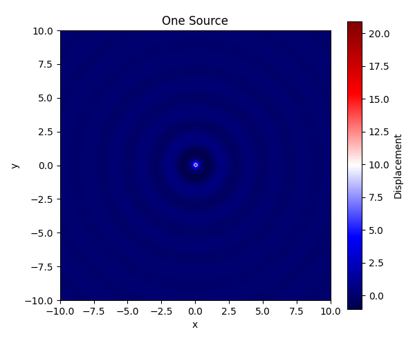
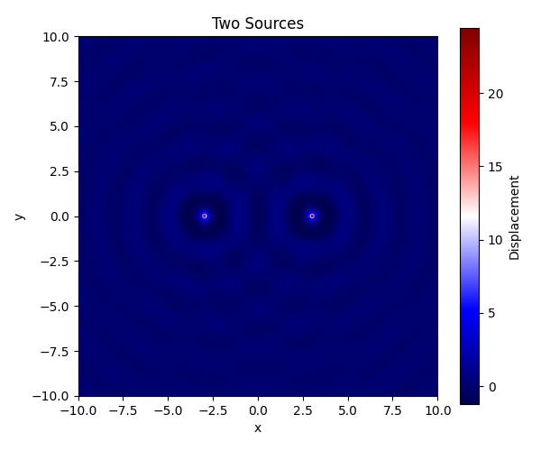
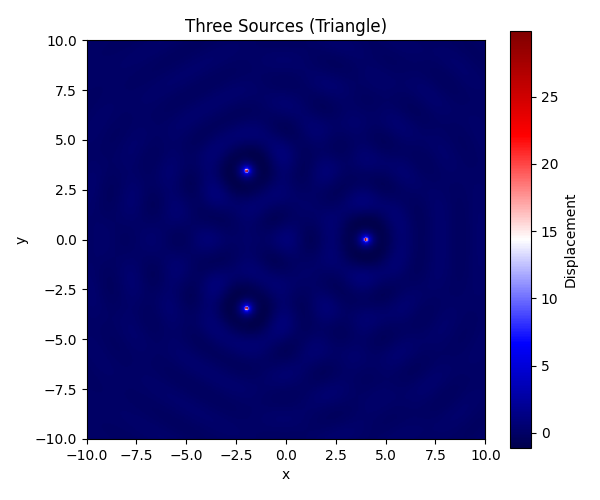
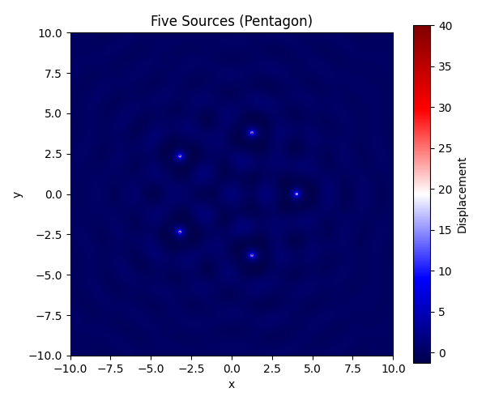
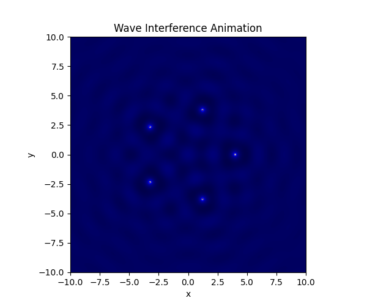

Problem 1
Interference Patterns on a Water Surface
Motivation
Interference occurs when waves from different sources overlap, creating new patterns. On a water surface, this is easy to observe when ripples from different points meet. These patterns reveal how waves combine — either reinforcing each other (constructive interference) or canceling out (destructive interference).
Studying these patterns helps us understand wave behavior in a visual and intuitive way. This task allows us to explore the effects of wave phase, coherence, and geometry.
Task Description
A circular wave emitted from a point source located at \((x_0, y_0)\) is modeled by the following equation:
Where: - \(\eta(x, y, t)\): Water surface displacement at point \((x, y)\) and time \(t\) - \(A\): Wave amplitude - \(k = \frac{2\pi}{\lambda}\): Wave number (with \(\lambda\) as wavelength) - \(\omega = 2\pi f\): Angular frequency (with \(f\) as frequency) - \(r = \sqrt{(x - x_0)^2 + (y - y_0)^2}\): Distance from source - \(\phi\): Initial phase
When multiple sources emit waves, we use the principle of superposition:
Python Simulation Code
To simulate and visualize the interference patterns for various point source configurations, use the following Python code.
import numpy as np
import matplotlib.pyplot as plt
from matplotlib.animation import FuncAnimation
from mpl_toolkits.mplot3d import Axes3D # Needed for 3D plot
import os
# --- Wave Parameters ---
A = 1 # Amplitude
wavelength = 2
frequency = 1
k = 2 * np.pi / wavelength
omega = 2 * np.pi * frequency
phi = 0 # Phase
# --- Coordinate Grid ---
x = np.linspace(-10, 10, 300)
y = np.linspace(-10, 10, 300)
X, Y = np.meshgrid(x, y)
# --- Polygon Vertex Generator ---
def polygon_vertices(n_sides, radius=4):
return [(radius * np.cos(2 * np.pi * i / n_sides),
radius * np.sin(2 * np.pi * i / n_sides)) for i in range(n_sides)]
# --- Wave from a Single Source ---
def wave_source(x0, y0, t):
R = np.sqrt((X - x0)**2 + (Y - y0)**2)
R[R == 0] = 1e-6 # avoid division by zero
return (A / R) * np.cos(k * R - omega * t + phi)
# --- Superposition of Waves ---
def superpose_sources(positions, t=0):
Z = np.zeros_like(X)
for (x0, y0) in positions:
Z += wave_source(x0, y0, t)
return Z
# --- Plotting Helper ---
def plot_heatmap(Z, title, filename):
plt.figure(figsize=(6, 5))
plt.imshow(Z, extent=(-10, 10, -10, 10), cmap='seismic', origin='lower')
plt.colorbar(label='Displacement')
plt.title(title)
plt.xlabel('x')
plt.ylabel('y')
plt.tight_layout()
plt.savefig(filename)
plt.show()
# --- Static Visualizations ---
plot_heatmap(superpose_sources([(0, 0)], t=0), "One Source", "one_source.png")
plot_heatmap(superpose_sources([(-3, 0), (3, 0)], t=0), "Two Sources", "two_sources.png")
plot_heatmap(superpose_sources(polygon_vertices(3)), "Three Sources (Triangle)", "triangle.png")
plot_heatmap(superpose_sources(polygon_vertices(5)), "Five Sources (Pentagon)", "pentagon.png")
# --- Optional: Animated GIF of Pentagon Interference ---
def generate_gif(positions, filename="interference_pentagon.gif", frames=60):
fig, ax = plt.subplots(figsize=(6, 5))
im = ax.imshow(superpose_sources(positions, t=0), extent=(-10,10,-10,10), cmap='seismic', origin='lower')
ax.set_title("Wave Interference Animation")
ax.set_xlabel('x')
ax.set_ylabel('y')
def update(frame):
Z = superpose_sources(positions, t=frame * 0.2)
im.set_array(Z)
return [im]
ani = FuncAnimation(fig, update, frames=frames, interval=80, blit=True)
ani.save(filename, writer='pillow')
plt.close()
generate_gif(polygon_vertices(5)) # Generates 'interference_pentagon.gif'
# --- Optional: 3D Surface Plot ---
def plot_3d(Z, title="3D Surface"):
fig = plt.figure(figsize=(8, 6))
ax = fig.add_subplot(111, projection='3d')
ax.plot_surface(X, Y, Z, cmap='viridis', edgecolor='none')
ax.set_title(title)
ax.set_xlabel('x')
ax.set_ylabel('y')
ax.set_zlabel('Displacement')
plt.tight_layout()
plt.show()
plot_3d(superpose_sources(polygon_vertices(5), t=0), title="3D Interference (Pentagon)")
Observations





- One Source: Symmetrical ripples, no interference
- Two Sources: Alternating regions of constructive/destructive interference
- Triangle/Pentagon: Clear geometric interference with repeating patterns
Deliverables
- ✅ Static plots:
one_source.png,two_sources.png,triangle.png,pentagon.png - ✅ Animation:
interference_pentagon.gif - ✅ 3D Surface Visualization
- ✅ Full Python simulation script embedded above